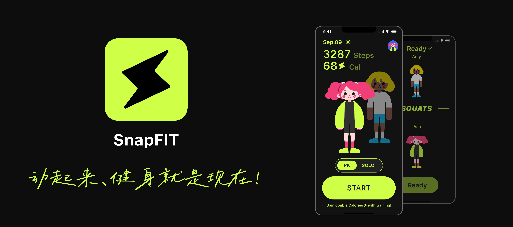
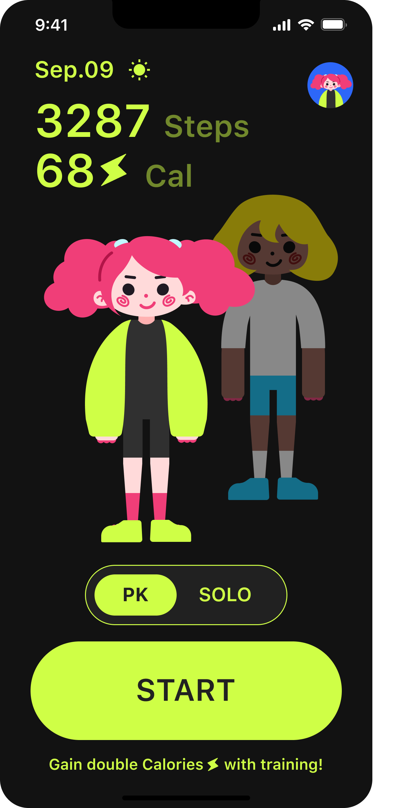
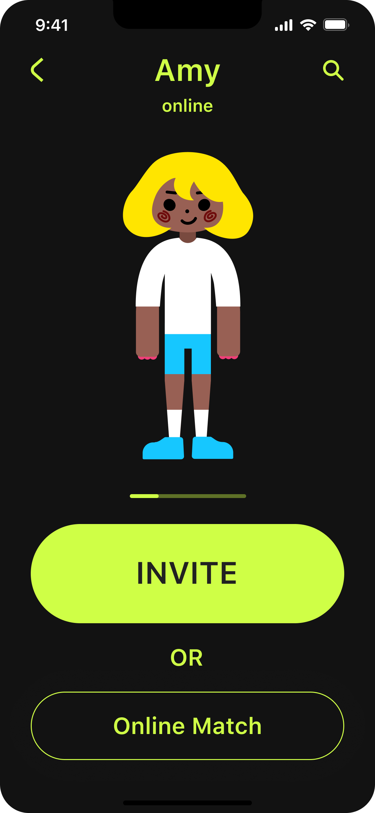
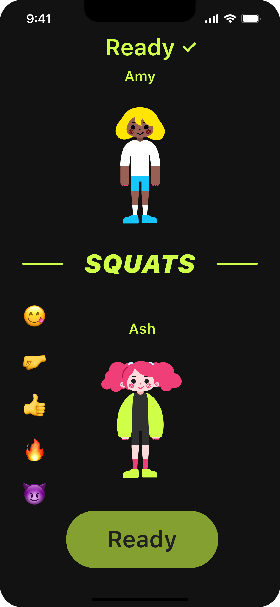
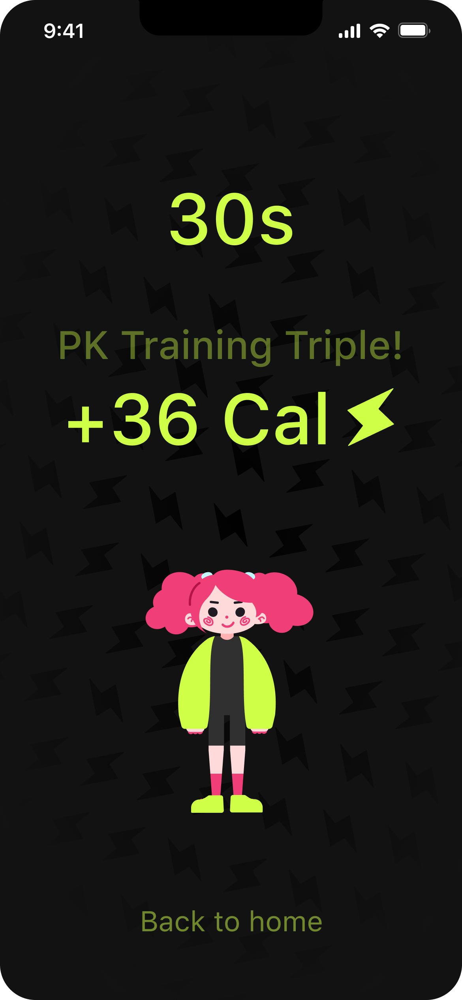
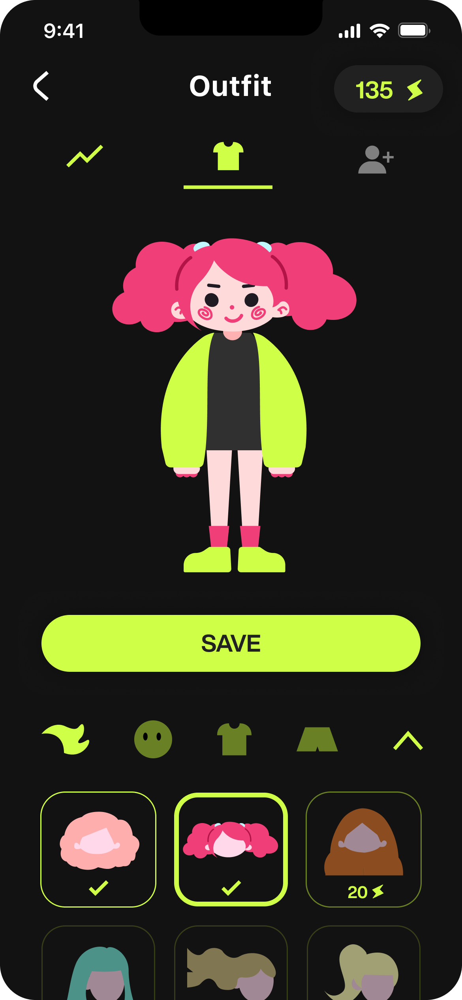
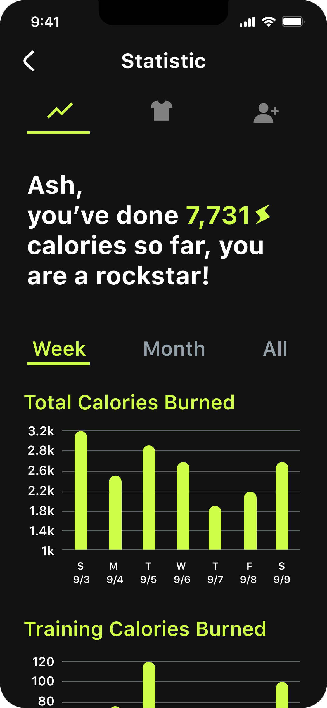

即时健身社交 APP，通过 PK 对战与角色养成机制，让运动变得有趣、有仪式感。
SnapFIT 是一款面向 Z 世代的即时健身社交产品，融合游戏化机制与真实运动数据，让每一次锻炼都有反馈感和成就感。本项目由我独立完成，是未落地的学生项目。
年轻用户缺乏持续健身的动力——传统健身 APP 数据枯燥、缺少社交反馈，用户很容易在前两周放弃。我们需要找到一种方式让运动本身变得有趣、有仪式感。
通过游戏化机制与社交对战，让用户在运动中获得即时反馈与成就感，提升健身坚持率。
以高饱和荧光绿作为品牌主色，搭配深黑背景，构建极具能量感和年轻气息的视觉系统。强调即时反馈、游戏化层级与清晰的运动数据展示。
色彩
字体 · SF Pro Text
角色动画
组件





